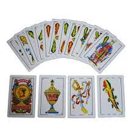
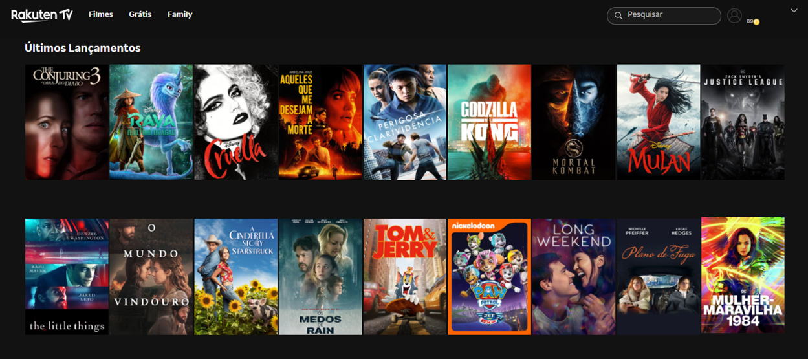

Quem sou eu?
Breve resumo:
Nascido em Blumenau em 26/10/1990, morei em Rio do Sul até 2006, com 16 anos fiz Intercâmbio pelo Rotary na Austrália, duração de 1 ano.
Durante Intercâmbio fiz o segundo ano do ensino médio lá, matérias de administração, direito, geologia, literatura australiana, marcenaria e educação física foram minhas escolhas.
Voltando do Intercâmbio terminei o ensino médio em Rio do Sul. Mudei para Florianópolis por 1 ano. Em 2009, me mudei para Joinville para fazer engenharia Civil na UDESC.
Antes de concluir o curso comecei a trabalhar. Hoje trabalho na indústria, estudo no SENAC (programa entra21) e tenho o curso de ciências da computação trancado na UDESC.
Alguns hobbies
- Tecnologia
- Xadrez
- Cartas (Poker, UNO, Truco, etc)
- Lig 4
- Filmes e Séries
1 / 5

Tecnologia
3 / 5

Cartas (Poker, UNO, Truco, etc)
4 / 5

Lig 4
5 / 5

Filmes e Séries
Alguns filmes e séries favoritos: